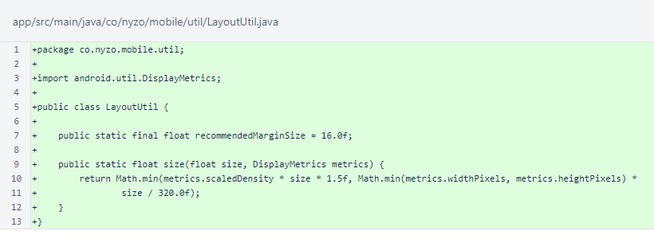

Nyzo Micropay for Android version 2 (commit on GitHub) adds the missing LayoutUtil class and corrects corrupted icon files.
Thank you to Moco for opening an issue about the missing LayoutUtil class on GitHub.
Version 1 of the Android app does not build properly. The first problem was absence of the LayoutUtil class in the co.nyzo.mobile.util package.
The LayoutUtil class contains a constant for recommendedMarginSize and a method for providing a size, in pixels, that scales nicely across different screen resolutions, orientations, and display pixel densities.
After adding this class, the project would still not build because the launcher icons had been corrupted by the transfer process used to produce this repository. These corrupt images were replaced with clean images.